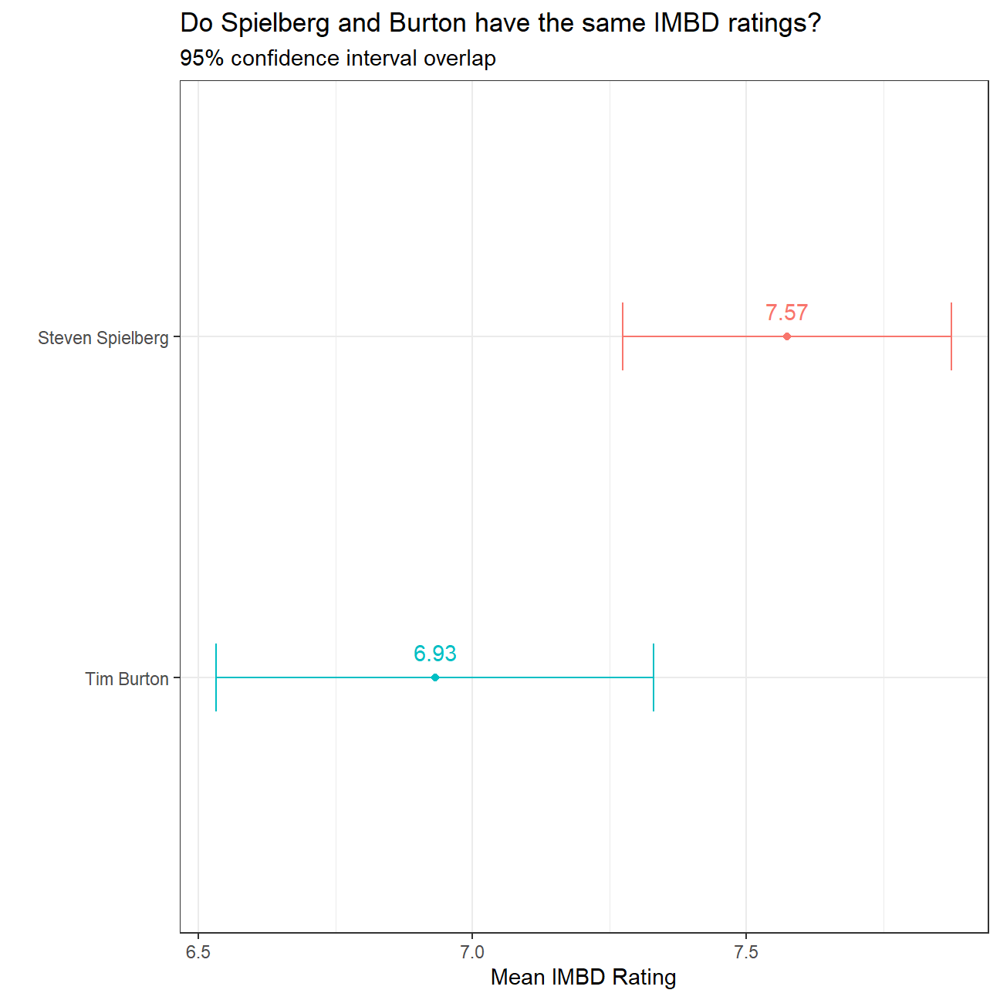
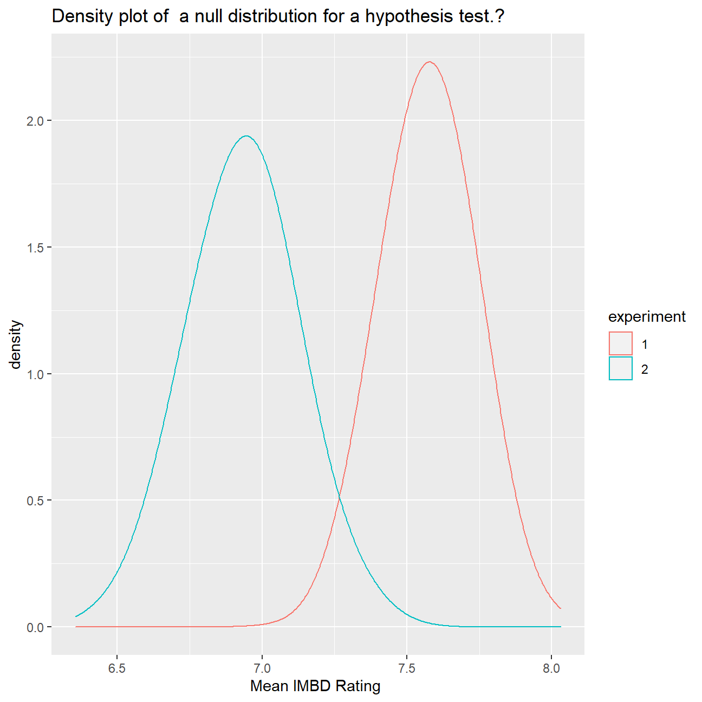

movies <- read_csv("movies.csv")
glimpse(movies)## Rows: 2,961
## Columns: 11
## $ title <chr> "Avatar", "Titanic", "Jurassic World", "The Ave...
## $ genre <chr> "Action", "Drama", "Action", "Action", "Action"...
## $ director <chr> "James Cameron", "James Cameron", "Colin Trevor...
## $ year <dbl> 2009, 1997, 2015, 2012, 2008, 1999, 1977, 2015,...
## $ duration <dbl> 178, 194, 124, 173, 152, 136, 125, 141, 164, 93...
## $ gross <dbl> 7.61e+08, 6.59e+08, 6.52e+08, 6.23e+08, 5.33e+0...
## $ budget <dbl> 2.37e+08, 2.00e+08, 1.50e+08, 2.20e+08, 1.85e+0...
## $ cast_facebook_likes <dbl> 4834, 45223, 8458, 87697, 57802, 37723, 13485, ...
## $ votes <dbl> 886204, 793059, 418214, 995415, 1676169, 534658...
## $ reviews <dbl> 3777, 2843, 1934, 2425, 5312, 3917, 1752, 1752,...
## $ rating <dbl> 7.9, 7.7, 7.0, 8.1, 9.0, 6.5, 8.7, 7.5, 8.5, 7....movies_rating<-movies%>%filter(director %in% c("Steven Spielberg" , "Tim Burton" )) %>% select(director,rating)
CI_rating<-movies_rating%>%group_by(director)%>%summarise(mean_rating = mean(rating, na.rm = TRUE),
sd_rating = sd(rating, na.rm = TRUE),
count = n(),
# get t-critical value with (n-1) degrees of freedom
t_critical = qt(0.975, count-1),
se = sd_rating/sqrt(count),
margin_of_error = t_critical * se,
ci_low = mean_rating - margin_of_error,
ci_high = mean_rating + margin_of_error)
ggplot(CI_rating,
aes(x=reorder(director, mean_rating),
y=mean_rating,
colour=director)) +
geom_point() +
geom_errorbar(width=.2, aes(ymin=ci_low, ymax=ci_high)) +
labs(x=" ",
y= "Mean IMBD Rating",
title="Do Spielberg and Burton have the same IMBD ratings?",
subtitle="95% confidence interval overlap") +
coord_flip()+
theme_bw()+
theme(legend.position = "none")+ geom_text(aes(label=round(mean_rating,2),mean_rating=mean_rating+0.5),position = position_dodge(1.5),vjust = -1)
t.test(rating~director,data=movies_rating)##
## Welch Two Sample t-test
##
## data: rating by director
## t = 3, df = 31, p-value = 0.01
## alternative hypothesis: true difference in means is not equal to 0
## 95 percent confidence interval:
## 0.16 1.13
## sample estimates:
## mean in group Steven Spielberg mean in group Tim Burton
## 7.57 6.93ex1_props <- movies_rating %>%
filter(director == "Steven Spielberg") %>%
select(rating) %>%
specify(response = rating) %>%
generate(reps = 1000, type = "bootstrap") %>%
calculate(stat = "mean")
ex2_props <- movies_rating %>%
filter(director == "Tim Burton") %>%
select(rating) %>%
specify(response = rating) %>%
generate(reps = 1000, type = "bootstrap") %>%
calculate(stat = "mean")
# Calculate variability of p-hat
ex1_props %>%
summarize(variability = sd(stat))## # A tibble: 1 x 1
## variability
## <dbl>
## 1 0.145# Calculate variability of p-hat*
ex2_props %>%
summarize(variability = sd(stat))## # A tibble: 1 x 1
## variability
## <dbl>
## 1 0.181# Combine data from both experiments
both_ex_props <- bind_rows(ex1_props, ex2_props, .id = "experiment")
# Using both_ex_props, plot stat colored by experiment
ggplot(both_ex_props, aes(stat, color = experiment)) +
# Add a density layer with bandwidth 0.1
geom_density(bw = 0.1)+
labs(x="Mean IMBD Rating ",
title="Density plot of a null distribution for a hypothesis test.?")